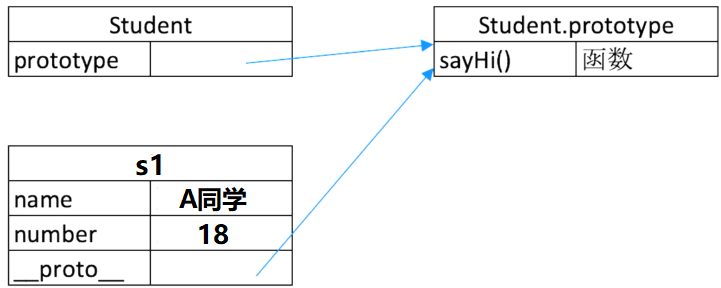
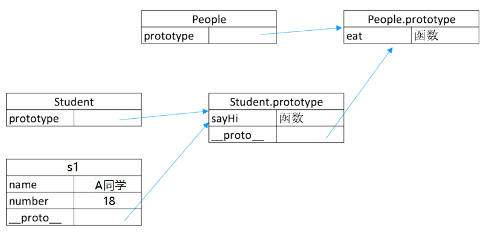
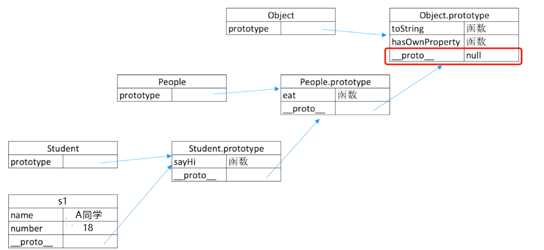

三座大山之一，必考！！！
JS 本身是一个基于原型基层的语言，ES6 之前，写继承的时候只能通过原型来继承，ES6 出来之后引入了 class 语法，可以通过 class 继承，但是基于对 class 的剖解来看，class 真正上的继承还是原型上的继承。
如何用 Class 实现继承
class
class 本质上就类似于一个模版，我们可以通过模版去构建一些东西。
- constructor
- 属性
- 方法
1 | class Student { |
继承
当我们有很多个 class ，这些 class 有一些比较公共的属性的时候，就可以把它抽离出来，让后让这些 class 继承。
1 | // 父类 |
类型判断
主要是判断 instanceof 前面的是否由 instanceof 后面的构建出来的，接上面代码
1 | class People { } |
JS原型
1 | class People { } |
在定义 class Student 的时候会有一个显式原型（prototype）指向一个对象（Student.prototype），并且把方法（sayHi）放在这个对象（Student.prototype）里面，通过 new 一个实例对象 s1 之后，他的 name、number 会放在实例对象 s1 本身，而这里的 sayHi 方法是通过隐式原型指向（Student.prototype）里面的方法来获取的。
原型关系
- 每个 class 都有显式原型 prototype
- 每个实例都有隐式原型 __ proto __
- 实例的隐式原型 __ proto __ 指向对应的 class 的显示原型 prototype
基于原型的执行规则
获取属性 s1.name 或执行方法 s1.sayHi() 时
先在自身属性和方法寻找
如果找不到则自动去隐式原型 __ proto __ 中查找
例如获取 s1.sayHi（），此时 s1 自身并没有 sayHi 方法，因此去 s1 的 __ proto __ 中查找，而隐式原型正好指向 class 的显式原型 Student.prototype ，然后就找到了 sayHi 方法。
原型链
1 | class People { } |
首先，左下角三个图的关系对应上一张图。但这里的 Student 的显式原型（Student.prototype）还会有一个隐式原型，指向了 People 的显式原型（People.prototype）,People 原型里面有 eat 方法。
逻辑上来讲，实例 s1 是通过 Student new 出来的，所以 s1 的隐式原型指向 Student 的显式原型。其次可以理解为 Student 的显式原型对象（Student.prototype）是通过 People new 出来的，所以 Student.prototype 的隐式原型指向 People 的显式原型（People.prototype）,
整体上说：
访问 s1.name/number 是通过 s1 本身属性；
访问 s1.sayHi() ,此时由于 s1 本身没有 sayHi 方法，所以通过隐式原型指向的 Student 上的显式原型对象找到 sayHi 方法；
访问 s1.eat() , s1 的身上与其身上隐式原型指向的 Student.prototype 都没有此方法，因此再通过 Student.prototype 上的隐式原型指向的 People.prototype 上来找到 eat 方法（由此形成了一个链）
我们可以通过 s1.hasOwnProperty(‘属性’) 来判断某个属性或方法是否为自身拥有，那么 hasOwnProperty() 方法是哪里来的？
从下图可以看出 Student 继承于 People ， People 继承于 Object ，所以说 People 的显式原型对象中也有隐式原型，并且指向 Object 的显式原型对象 Object.prototype （JS 引擎本身自己带的），Object 原型里面有很多方法。
因此 s1 访问 hasOwnProperty 方法，就会通过这个原型链来一级一级查找，最终在基类 Object 的显式原型上找到 hasOwnProperty 方法
1 | // 基类 Object 的显式原型对象身上的隐式原型永远指向 null |
再看 instanceof
还是这张图， instanceof 前面的变量顺着隐式原型往上找，如果能对应到 instanceof 后面的参数 class 的显式原型（或者原型链上的显式原型），如果能对应到，那么 instanceof 成立返回 true，如果对应不到就返回 false ，
重要提示！！！
- class 是 ES6 语法规范，由 ECMA 委员会发布
- ECMA 只规定语法规则，即我们代码的书写规范，不规定如何实现
- 以上实现方式都是 V8 引擎的实现方式，也是主流的
题目
如何准确判断一个变量是不是数组？
1
2
3
4
5
6
7// 结合原型链的图理解 instanceof
const a = []
a instanceof Array
// 从原型入手: Array.prototype.isPrototypeOf(obj)
// 利用isPrototypeOf()方法，判定Array是不是在obj的原型链中如果是，则返回true,否则false。
Array.prototype.isPrototypeOf(a) // trueclass 的原型本质，怎么理解？
- 每个 class 都有显式原型 prototype
- 每个实例都有隐式原型 __ proto __
- 实例的隐式原型 __ proto __ 指向对应的 class 的显示原型 prototype
- 获取实例身上属性或执行方法时，先在自身属性和方法寻找，如果找不到则自动去隐式原型指向的父类显式原型对象中查找 ，然后顺着与原型链去查找。
手写一个简易的 jQuery，考虑插件和扩展性
1
2
3
4
5
6
7
8
9
10
11
12
13
14
15
16
17
18
19
20
21
22
23
24
25
26
27
28
29
30
31
32
33
34
35
36
37
38
39
40
41
42
43
44
45
46
47
48
49
50
51
52
53
54
55
56
57
58
59
60
61
62
63
64
65class jQuery {
constructor(selector) {
// 首先 DOM 查询
const result = document.querySelectorAll(selector)
const length = result.length
// 对查出的结果进行遍历
for (let i = 0; i < length; i++) {
// 把遍历的每个结果都放到 this 上
this[i] = result[i]
}
this.length = length
this.selector = selector
}
// jQuery 中的 get 方法
get(index) {
return this[index]
}
// each 遍历
each(fn) {
for (let i = 0; i < this.length; i++) {
const elem = this[i]
fn(elem)
}
}
// on 监听方法
on(type, fn) {
return this.each(elem => {
elem.addEventListener(type, fn, false)
})
}
// 还可扩展很多 DOM 操作 API
}
// const $p = new jQuery('p')
// $p.get(1)
// $p.each((elem) => console.log(elem.nodeName))
// $p.on('click', () => alert('clicked'))
// 插件机制（做一个插件，但其实用的还是 jQuery）
jQuery.prototype.dialog = function (info) {
alert(info)
}
// $p.dialog('123456')
// "造轮子" (复写机制)
// 就是基于这个 jQuery 去造一个更加完美的 myJQuery 供使用
class myJQuery extends jQuery {
constructor(selector) {
// super 的好处体现，直接使用 jQuery 的复杂 constructor，无需再写一遍逻辑
super(selector)
}
// 扩展自己的方法...
addClass(className) { }
style(data) { }
}